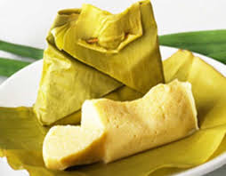

<< Daftar Resep
Kuliner Khas Makassar - Kue Barongko Pisang
bahan |
cara membuat

Kue Barongko Pisang
Untuk 7 Bungkus
Bahan- bahan :
- 10 buah pisang kepok matang
- 1/2 sendok teh garam
- 100 ml santan dari 1/4 butir kelapa
- daun pisang untuk membungkus
Cara membuat :
- Kupas pisang, ambil bagian tengahnya. Haluskan.
- Campur pisang, gula pasir, garam, telur, dan santan. Aduk rata.
- Ambil daun pisang. Sendokkan campuran pisang. Bungkus tum. Semat dengan lidi.
- Kukus 25 menit diatas api sedang sampai matang.
Kembali ke atas
<< Daftar Resep